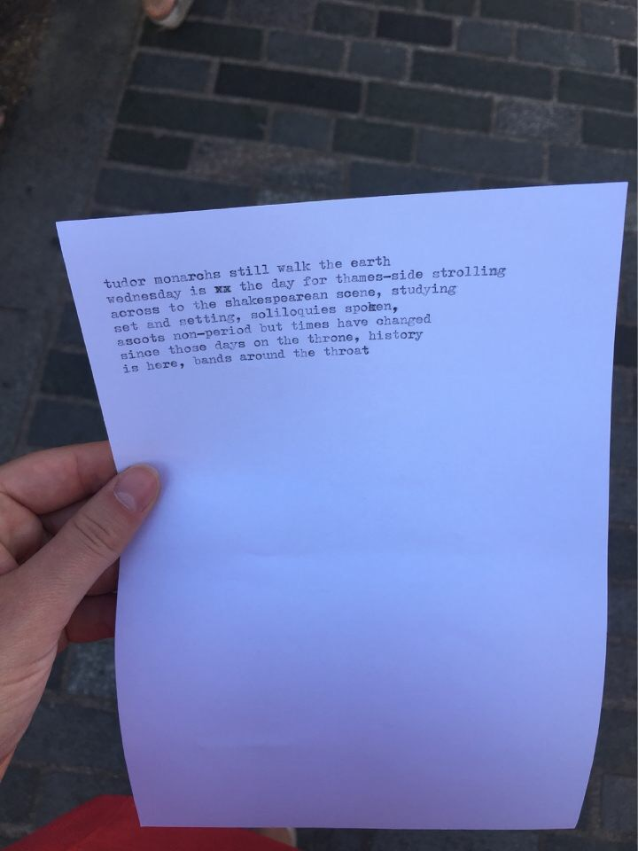
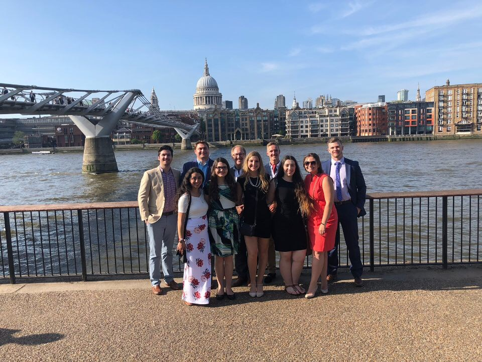

We all awoke to the sad reality that today will be our last full day together in England. Nevertheless, we pulled ourselves together and tubed to King’s Cross Station in order to catch the Great Western to Eton and Windsor Castle. Fearing the inevitable (that there would be no beverage trolley on board), the group was given a 10 minute window for a Starbucks run. Then we settled into our cushy seats and enjoyed some beautiful scenery of the English countryside (and, sure enough, without a trolley). We arrived before the opening 10:00am of the gates at Windsor Castle, yet, we were greeted with a long line that circled around a corner and down one city block: just the situation to wake Engle up fully! He sprang into action, and just as we arrived at the end of the queue, we received a signal from him to turn and to come to the front of the line. How he does this remains a well-kept mystery.
As the first persons in to Windsor Castle, we ditched the electronic headphones and instead followed our professor to hear his colorful commentary. We were first into St. George’s Chapel, site of Harry and Megan’s royal wedding just weeks before. Engle showed us the royal crypts, ending on the tombstone of King Henry VIII. The plan was to place a red rose on his grave; however, after understanding fully the character of the king, the group decided instead not to honor his memory. Unpleasant and uncouth adjectives were recited while Sarah snapped an illegal photo of the marker. Some were even tempted to fire up the chapel’s vacuum cleaner that was accidentally left in the nave and run it over king’s grave. We resisted the urge. From there we saw the resplendent chapel of the Order of the Garter, and then found our way to the royal apartments.
Once at home, we did a quick refresh and dressed for the theatre. We tubed through rush hour in order to arrive at the Globe Theatre for a pre-concert lecture given by “Dr. Phyllis.” We did stop and pay a street poet to write a poem about our group, that poem was later framed and given to Engle.
Street Poem

Once at the Globe, we went below to the lecture hall for Dr. Phyllis. It was stifling hot, Nic and Chase made paper airplanes out of their programs in order to entertain themselves. However, once we found our way to our stalls to see The Two Noble Kinsmen, the play, in contrast to Dr. Phyllis, was amazing. We were all absolutely astonished by the performance—the open air venue, the actors, the music, the quality, and the plot’s twists and turns. There was a little person acting in a major role during the play, that stole the show in our eyes. The audience—just as in Shakespeare’s time—was encouraged to get involved by cheering and booing, which we did. Afterward we had a leisurely stroll across the Millennium Bridge but stopped for some great group shots with St. Paul’s in the background, the dome lit up against the dark sky. Chivalrous men offered their jackets to chilled women. We were encouraged to take one last peak at London before we dipped below to catch our tube ride home. It was an amazing evening that concluded our trip.
The Crew on their Way to The Globe Theatre

Thursday 7 June Postscript
Everyone was up early, doing their chores to pack and clean Richmond Court. Andrew and Sarah were first to leave, via a black cab, for the Eurostar that would whisk them to the continent. The rest of the group schlepped their luggage stuffed with dirty laundry and souvenirs back to the tube station for the 30-minute ride to Heathrow. After some fun conversation with the Delta security control workers, we figured out the proper order for check-in. Then we all gave hugs and said our goodbyes to Engle; we proceeded through security to our gates (through the gift shops) and Engle returned to Richmond Court to do check-out paperwork with Yogi.